Screens
The identity at work
Twenty screens of the product, in the order an organization meets them: the owner writes a sentence and Watar builds the line; the owner reviews it, shapes it on the canvas and publishes it; the team signs in and works from My work, Notifications, My space and the item page, and leads run their block’s queue; the owner sees Home, the people, the reports and the settings; clients answer from a link; and what repeats turns into automation, fed by sources and templates through integrations. The demo is two organizations from the owner’s own screens, Al-Khatt Media and Masar, with an agency, Wamda. The identity is not painted on top; it is how each screen says where work stands. Every image opens the live screen.
Start from a sentence
iqaa.app/start
The owner writes the organization’s name and what it makes, in their own words. Watar asks at most three questions, chosen from the idea, and builds the line as a draft.
Where the identity lives
- The four fixed steps are shown before they run, each a dashed stroke the pen writes in ink when it is done.
- Watar never publishes: everything it builds waits for a person, in the dashed grey pen.
- The templates come from the packs: Media and Software now, the agency and service packs marked as coming.
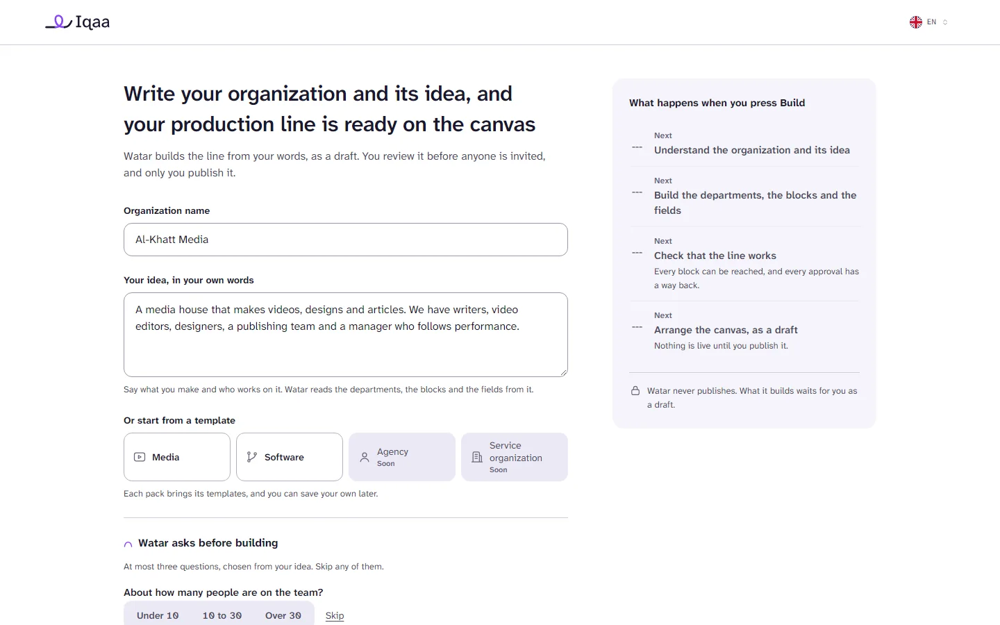
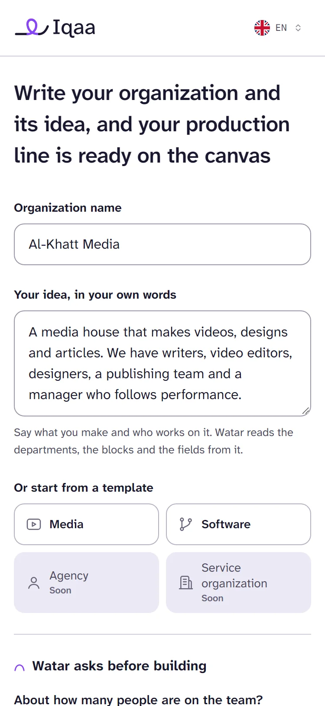
Review what Watar built
alkhatt.iqaa.co/built
Before the team is invited, the owner reads what Watar built, in the organization’s own words: the line, its departments, the item’s fields, the invitations by role, and who may do what.
Where the identity lives
- The whole proposal hangs from one dashed grey pen down its edge, Watar’s pen, until the owner accepts it.
- The line is drawn in its own strokes, with the check written under it: no closed roads, every approval has a way back.
- The sensitive field carries a lock and is hidden from the people who do the work, before anyone asks.
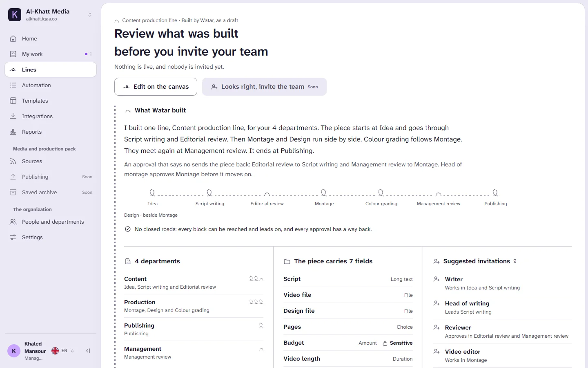
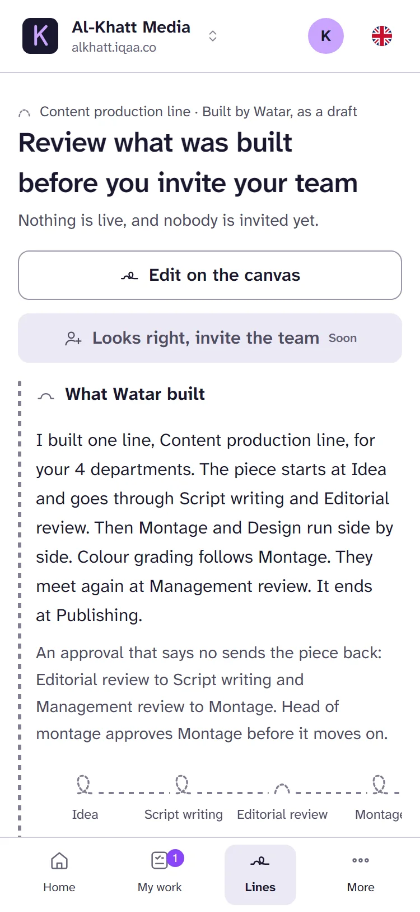
Build the line on the canvas
alkhatt.iqaa.co/lines
The owner sees the line as a metro map, edits its blocks, and gives each block its people and roles, what each role sees, and how it runs. People apply at once; everything else waits for the next version.
Where the identity lives
- Every block is an interchange ring with its stroke, its department and its people; Design leaves at 45° and rejoins, a way back runs under the line.
- What the draft adds is drawn in the dashed grey pen; a removed block stays faded with the pieces still in it in red.
- What each role sees is one table of fields and actions, with a preview: “This is how a Video editor sees this block”.
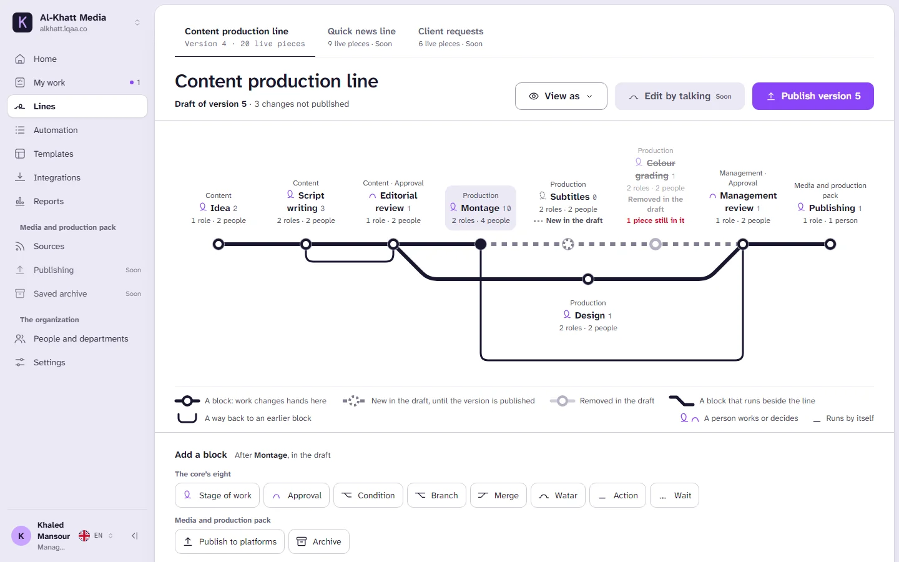
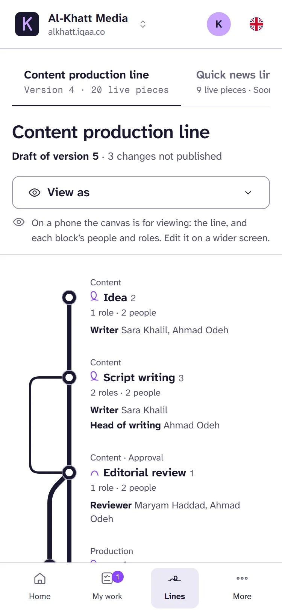
The network of lines
alkhatt.iqaa.co/lines/network
Lines connect three ways, as the plan has it: a call opens an item in another line and waits for its result, a launch opens work there and goes on, an aggregate makes many items one. Every line declares what comes in and goes out.
Where the identity lives
- What feeds the main line sits above it and what it feeds below, so every link joins neighbouring rows.
- A call is a line there and a half-weight way back to where it waits; a launch has an arrow; an aggregate is three thin lines becoming one.
- Each link is also said in one line under the map, with how many items it carried.
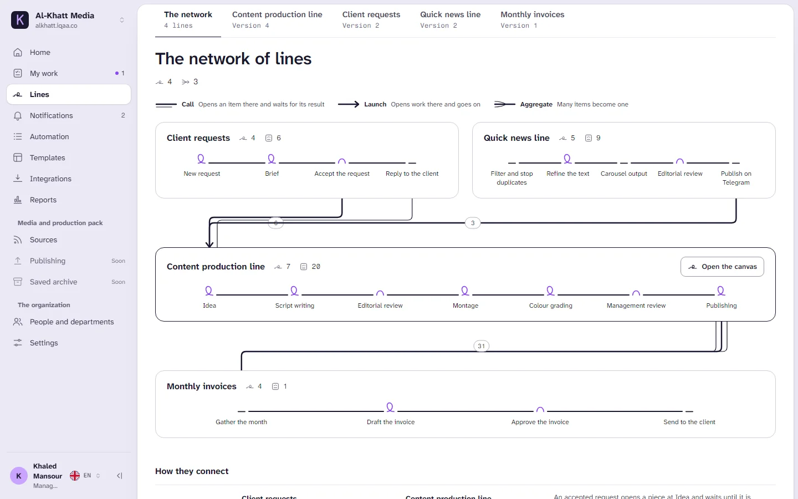
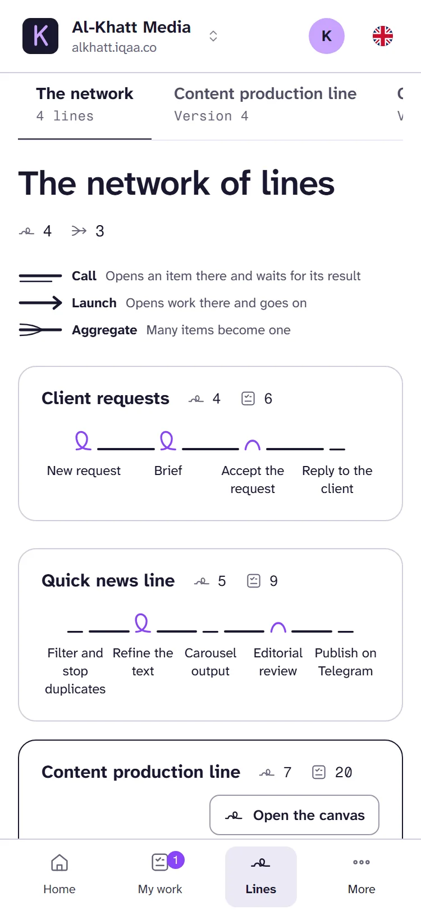
Publish a new version
alkhatt.iqaa.co/lines/publish
What changed since the published version, in the organization’s words; where the live items go; and the same check that runs on every publish, for every organization.
Where the identity lives
- The new version is drawn with what it adds in the dashed grey pen; publishing writes it in ink.
- Nothing moves under anyone’s hands by default: live items finish on the version they started on.
- An item in a removed block must have a place before publishing; the button says why it waits.
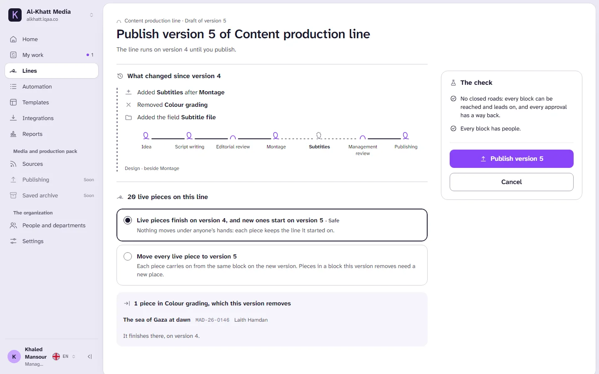
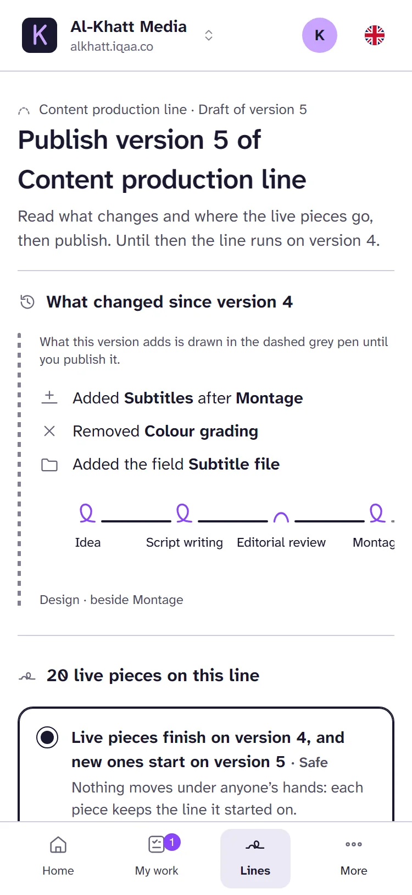
Arrive at your organization
alkhatt.iqaa.co
The people who work the line sign in on their organization’s own address, often on a phone.
Where the identity lives
- The organization leads: its mark signs itself as the card opens, its initial in the page’s own letters, and Iqaa signs off at the foot.
- The check runs as a stroke ticking on the beat inside the button.
- Once you are in, the pen writes the organization’s line across the card and marks your block.


My work
alkhatt.iqaa.co/my-work
The screen people open dozens of times a day, deliberately simple: what is in progress, what is new for you, and what is open for your role to claim.
Where the identity lives
- Each item carries its line as one pen stroke: done in colour, its block underlined, the rest in the dashed grey pen.
- Red and nothing else for what is late; a piece sent back says who sent it, from where, and why.
- Starting and claiming are a person’s act, so the violet stays with the person; both can be undone.
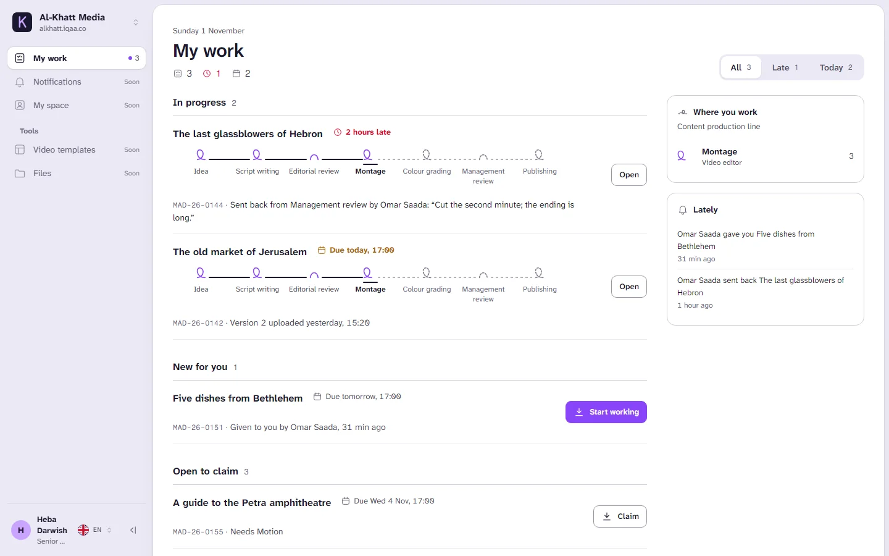
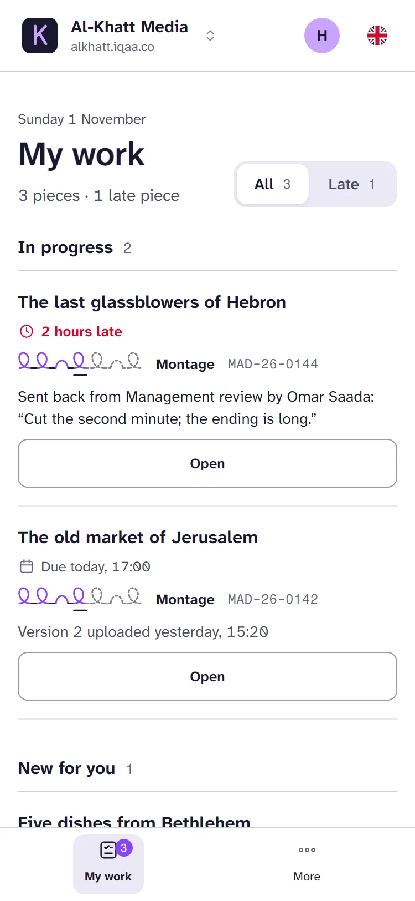
Notifications
alkhatt.iqaa.co/notifications
What reached the person, newest first: sent back, given, waiting for their approval, late; for the owner also invitations and expired integrations. One of the three screens the phone frame keeps for everyone.
Where the identity lives
- Each notice is one line with its icon; what failed or is late is the only red.
- Unread is a violet dot and a heavier line until it is opened: a person’s matter.
- The organization’s channel (Telegram here) says where the same notices also go.
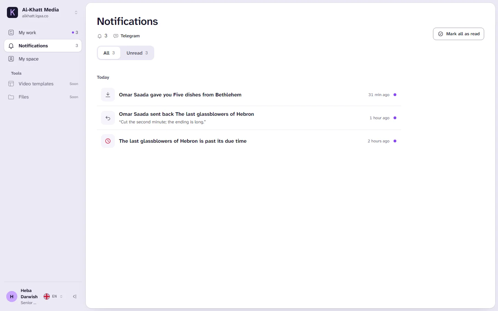
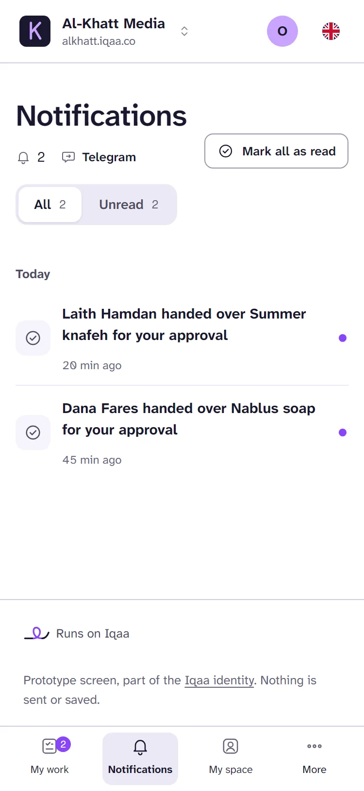
My space
alkhatt.iqaa.co/me
The person as the line knows them: their week in hours, the steps they took each day, the blocks they hold a role in, their skills from the organization’s list, and where their notices go.
Where the identity lives
- The week is seven bars counted from every item’s log; today is ink.
- Each block carries its stroke and what is theirs there.
- Skills come from the organization’s own list, theirs filled.
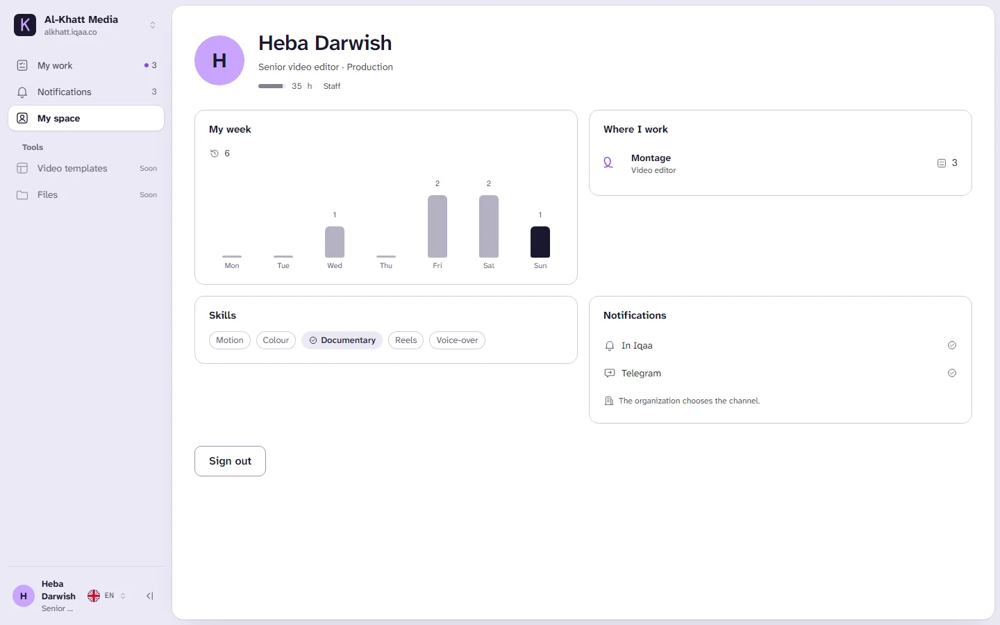
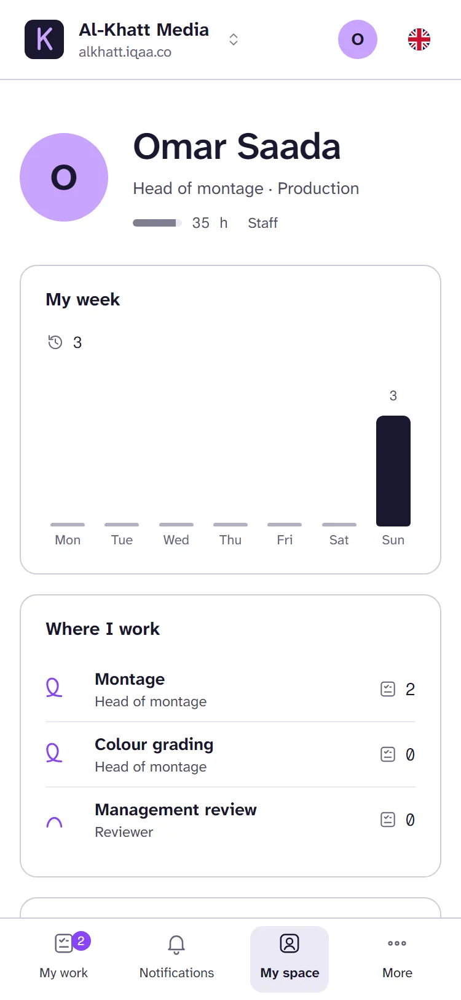
The item page
alkhatt.iqaa.co/pieces/MAD-26-0144
One template for every organization: a piece with its video versions for a video editor, a ticket with its pull request and checks for a developer. The fields are the role’s own; the rest never reaches the browser.
Where the identity lives
- The line runs across the top with every block named in its stroke and the item’s place underlined.
- The one primary action is named by the next block (“Hand over to Colour grading”), and says when a lead approves it first.
- Watar’s tools draft in the dashed grey pen; nothing changes until a person accepts.
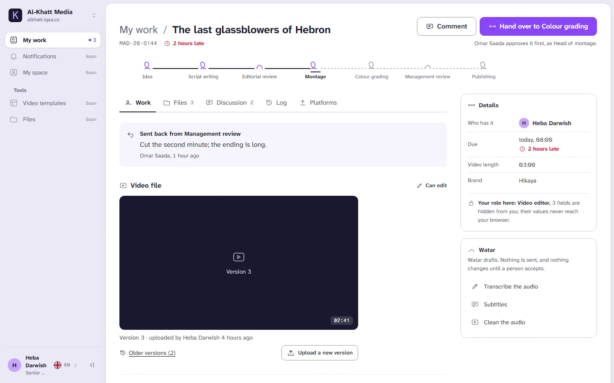
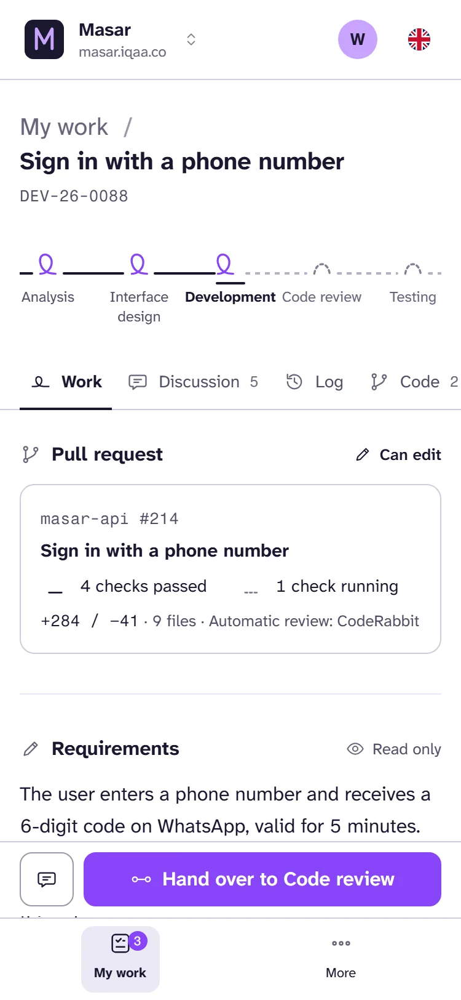
A block’s queue
alkhatt.iqaa.co/blocks/montage
The head of a department’s space: every item in the block, nobody’s yet, each person’s, and what waits for the lead’s approval.
Where the identity lives
- Each card carries its line as one stroke and the two fields the lead may see; the budget shows to the lead and never to an editor.
- Approving is violet, a person’s act; giving work out puts who has the skill first.
- A freelancer shows until when; no workload number is invented where the data cannot give one.
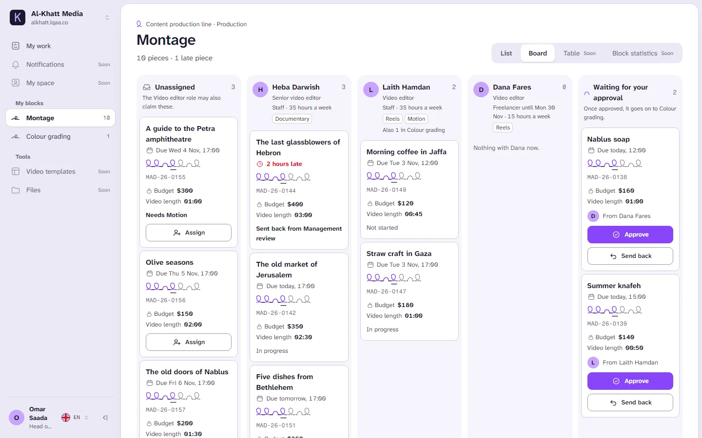
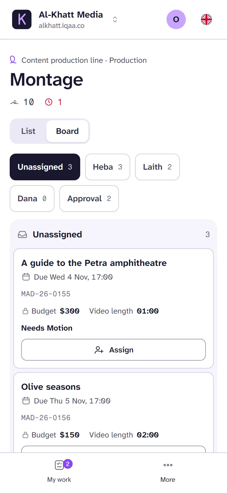
The owner’s home
alkhatt.iqaa.co
The most important board for any owner: the core’s numbers, the pack’s numbers, where work stands on the line block by block, what waits for a decision, and Watar’s suggestion from the line’s own log.
Where the identity lives
- Every block is a row with its stroke and a bar against the time it expects; the bottleneck is the one red row.
- Watar’s suggestion is drawn in the dashed grey pen: an approval of the script before Montage, because 38% of pieces came back over it.
- The same Home tells another story for another organization: for an agency, spend and return on ads.
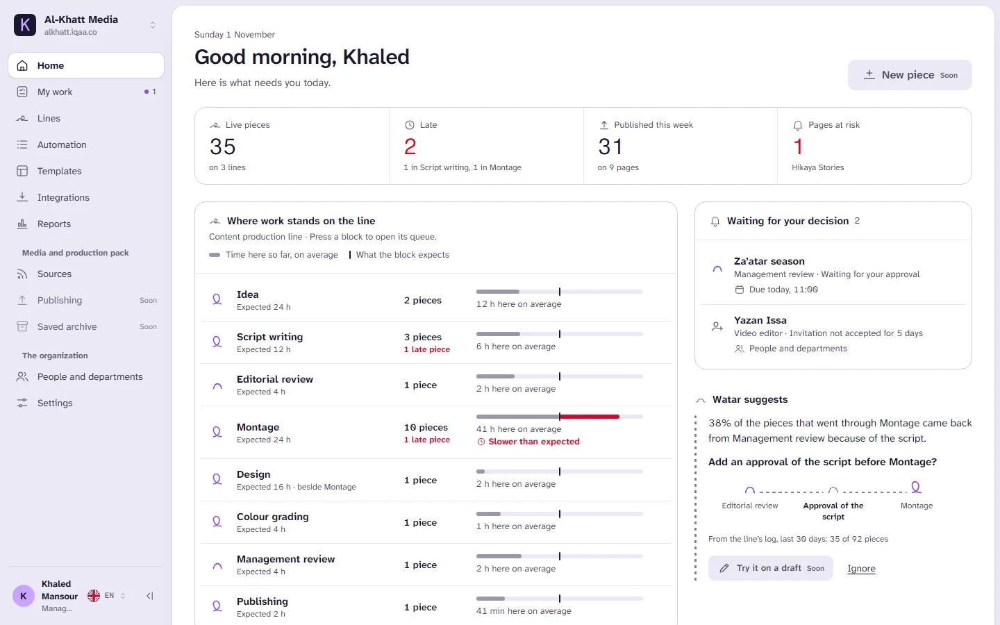
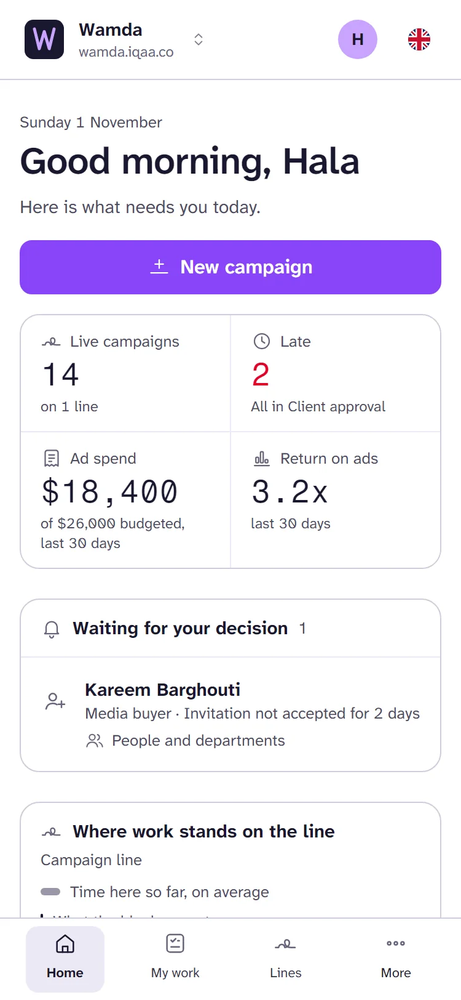
People and departments
alkhatt.iqaa.co/people
The departments and teams, each person, their skills and hours, and where they work: one line that reveals every permission they hold.
Where the identity lives
- A title is free text and gives no permission; what a person may do comes from their role in each block, shown with the block’s stroke.
- Someone invited and not joined yet is drawn in the dashed grey pen until they arrive.
- A new member inherits every permission of their team: the rule is written on the screen, not in a manual.
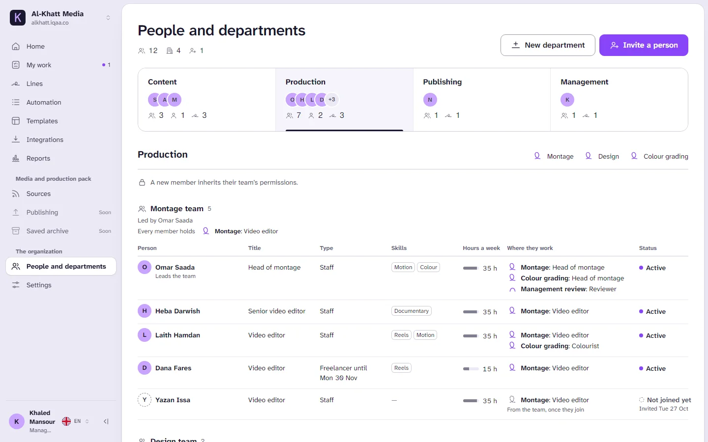
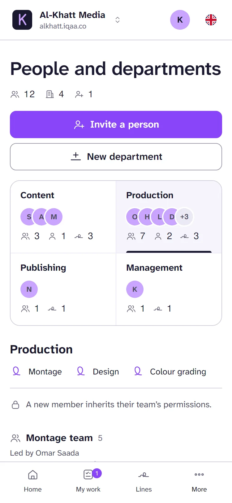
Reports of the line
alkhatt.iqaa.co/reports
The core’s numbers from the line’s log, the same for every organization with nothing to set up, then the pack’s results after delivery.
Where the identity lives
- One row per block in the line’s order, with its stroke, its time against what it expects, and what came back.
- The bottleneck is the only red on the page, with its cause in one line.
- Results belong to the pack: reach and engagement for media, bugs after release for software.
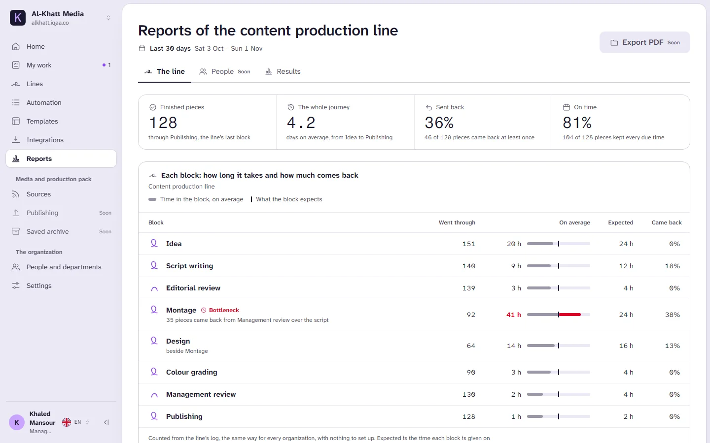
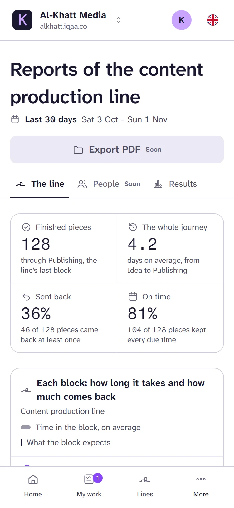
Packs and integrations
alkhatt.iqaa.co/settings
The only way to customize: a pack adds blocks, screens and reports and never changes the core. Its integrations, the organization’s light identity, and the month’s usage.
Where the identity lives
- The organization’s identity is light: a mark, an address and a language; Iqaa’s own look stays as it is.
- An expired permission is the one red: what goes to it waits until someone reconnects.
- Usage is an example, said so in the dashed grey pen down its edge.
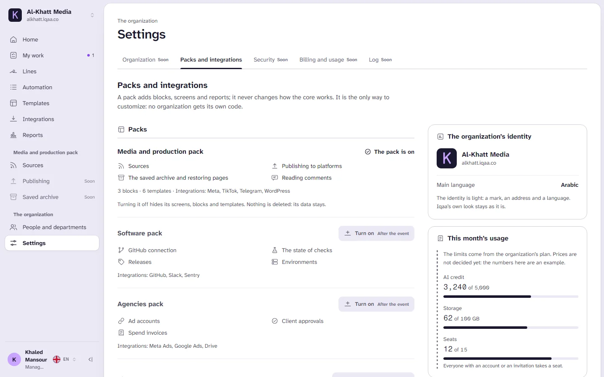
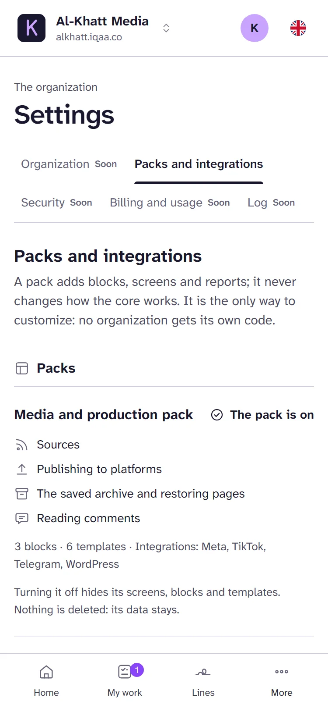
The client reviews from a link
alkhatt.iqaa.co/r/MAD-26-0142
The client opens a signed, temporary link without an account: the piece, its video with comments pinned to moments, and one decision.
Where the identity lives
- The organization leads with its own mark and name; Iqaa signs off once at the foot.
- Comments sit on the video’s timeline at their moment, in violet: the client’s own hand.
- Approving or asking for changes moves the piece on the line, which the team sees at once.
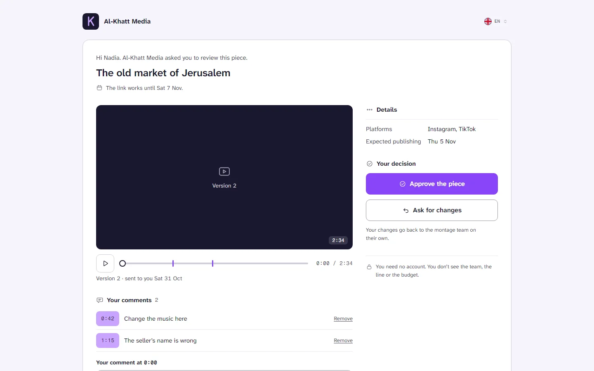
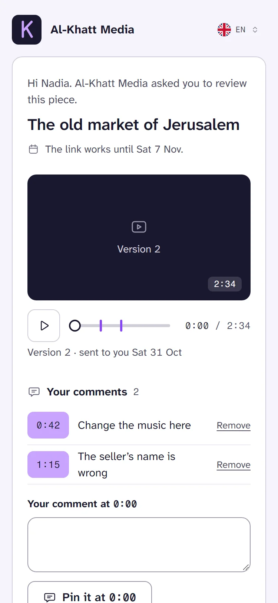
Turn a step into automation
alkhatt.iqaa.co/automation
The quick news line: a source comes in, the machine filters, refines and makes a carousel, a person reviews, and it is published on Telegram. Each block runs in one of five modes, with limits, a stop button and a person to fall back on.
Where the identity lives
- The machine’s work is ink, the grammar’s straight run; a person’s is violet; the line stays the same when a step turns automatic.
- Stopping is immediate, for a block or the whole line, without publishing a version; pending work goes to people.
- Fully automatic is never published without a named person’s acceptance, a daily cap and a budget.
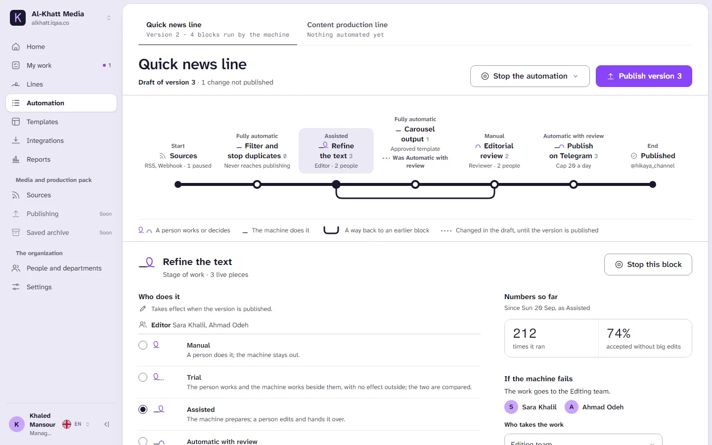
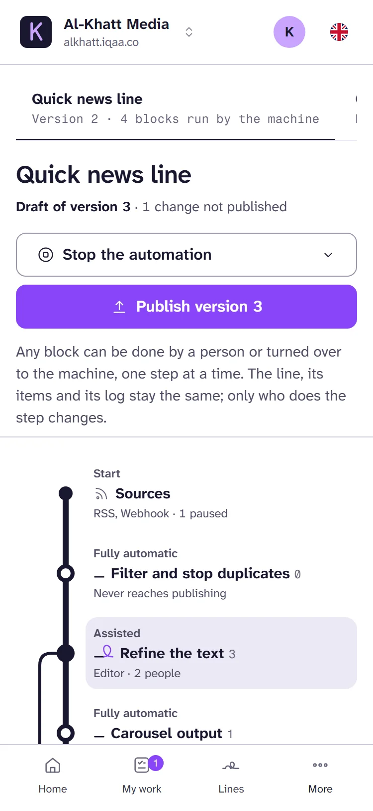
Sources and what came in
alkhatt.iqaa.co/sources
RSS, webhooks, channels, schedules and other lines: each source, its setup, and every attempt that came in today, even the ones turned away, with the reason.
Where the identity lives
- Everything that came in is written down, so “why didn’t it come in?” always has an answer.
- Nothing enters the line twice: a duplicate is shown, not added.
- The field map is Watar’s suggestion in the dashed grey pen until a person approves it.
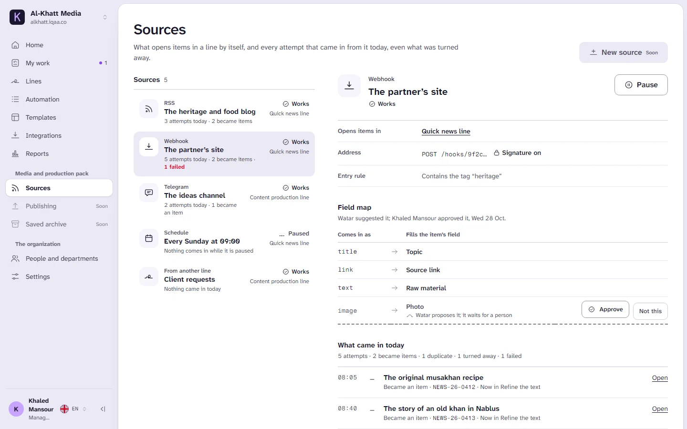
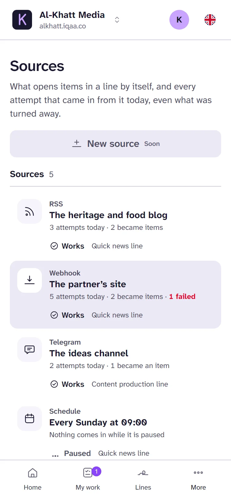
Templates
alkhatt.iqaa.co/templates
Templates for what the machine makes: uploaded, from the catalogue, or built by Watar — each a structured description with slots, never code, and approved in a person’s name.
Where the identity lives
- An approved template never changes; every edit is a new version, and every output keeps the version it was made from.
- A draft template is drawn in the dashed grey pen and makes nothing until a person approves it.
- The preview uses a real item, in Arabic, at every size it is made in.
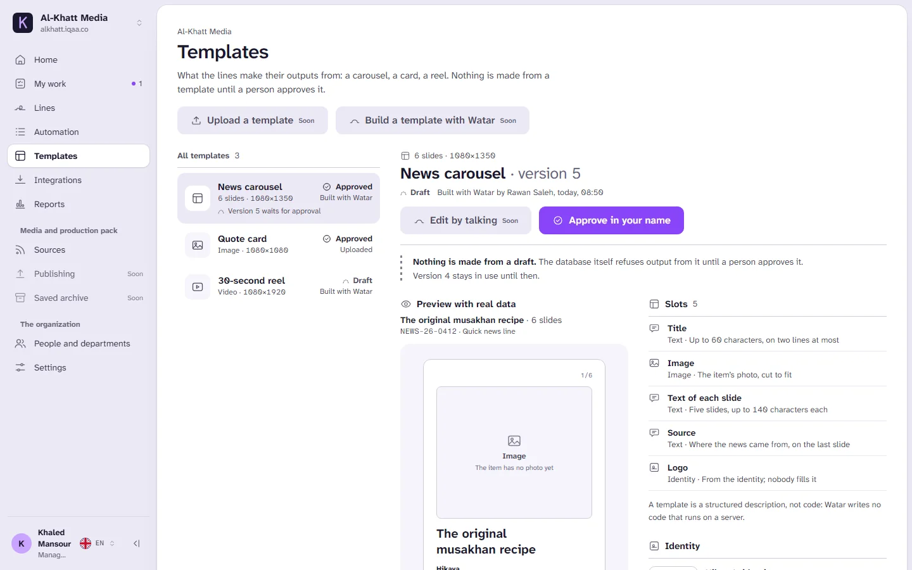
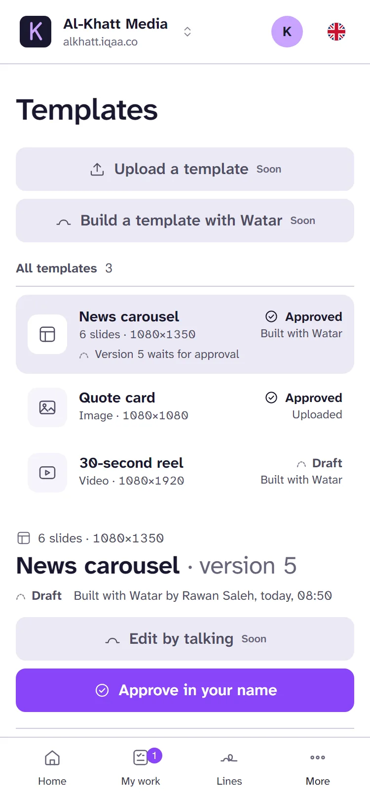
Integrations
alkhatt.iqaa.co/integrations
Iqaa works with the tools teams already use: each connection’s state, and the log of every event in and out, with a manual re-run.
Where the identity lives
- A failure never stops the work: what failed is shown in red, the team carries on in Iqaa, and what waited goes out later.
- Checks are read the general way, so any tool that posts its results there shows in the block.
- In and out are written down with no duplicates, so a re-run never posts twice.
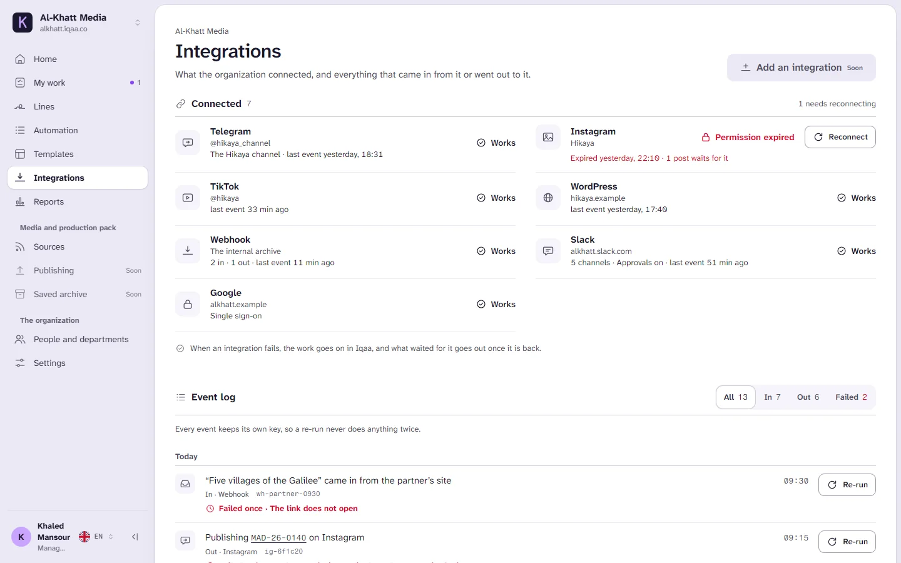
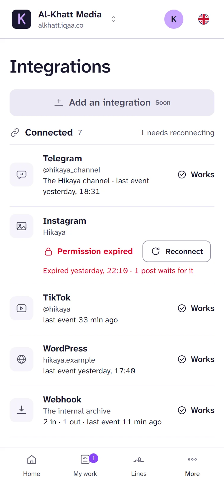